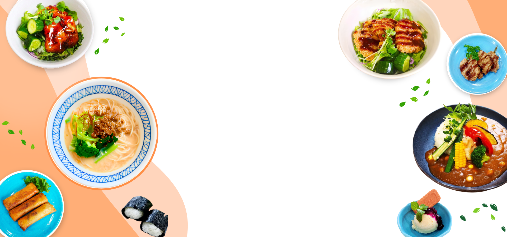

京都で、安心して楽しめる
植物性の食事を。
ヴィーガン・ベジタリアンの方はもちろん、 食事に配慮が必要な方や、 海外から京都を訪れる方にも、 安心して植物性のお食事をお楽しみいただけます。 当店のお料理は100%植物性。 ネギ、玉ねぎ、ニンニク、あさつき、 らっきょうの五葷を使用していません。 一部、グルテンフリーを選べる メニューもご用意しています。
※アレルギーや原材料については、FAQをご確認ください。
メニュー
DAICHU SHOP併設
Popular Menu
おすすめメニュー

大豆ミートカツ丼
Soy Meat Cutlet Rice Bowl ｜ 大豆肉炸豬排蓋飯

胡麻ラーメン
Sesame Ramen ｜ 胡麻拉麵

カレーうどん
Curry Udon ｜ 咖哩烏龍麵

大豆ミート照り焼き丼
Soy Meat Teriyaki Rice Bowl ｜ 大豆肉照燒蓋飯

野菜カレー
Vegetable Curry ｜ 蔬菜咖哩

OUR COFFEE
自家焙煎 NAMIKI COFFEE
滋賀県高島市・マキノの自然の中で、生豆の種類に合わせて焙煎時間や火力を調整し、丁寧に焙煎される「NAMIKI COFFEE」。
ハチドリTableでは、煎りたての豆から淹れる一杯をお楽しみいただけます。

ABOUT HACHIDORI TABLE
ハチドリTableに込めた想い
ハチドリTableという名前は、京都の八条通りと、世界で一番小さな鳥「ハチドリ」に由来します。
ネイティブアメリカンの文化では、ハチドリは平和、愛、幸福の象徴です。
私たちも、そんな場所でありたいと願っています。
ハチドリTable の名に込めた想い 当店は京都の八条通りにあります。 お店のある“八条通り”と 世界で一番小さな鳥“ハチドリ”から名付けました。 ネイティブアメリカンの間でハチドリは “平和、愛、幸福”の象徴です。 この店も、そんな象徴となれるようにとの願いを込めています。 ハチドリのひとしずく… 南米の先住民族に伝わる民話—— 森で火事が起こり、 動物達はみんな我先にと逃げていきました。 一羽の小さなハチドリは留まって、 水辺と森を行ったり来たり。 くちばしに入れた水を一滴ずつ火の上に落とし、 火を消そうとしました。 動物達はそれを見て 「そんなことして何になるんだ」と笑います。 ハチドリはこう答えました。 「私は自分が出来ることをしているだけだよ」 私たちも、そんなハチドリのように 自分が出来る精一杯を尽くす精神を大事にしたい。 小さくても、自分達にできることを、菜食という形で。 人や地球にやさしい選択を届けていきたいと思っています。 この場所から、小さなひとしずくを…
DAICHU SHOP
ベジタリアン食材SHOP
ハチドリTableの店内には、ベジタリアン食材を販売する「DAICHU Shop」を併設しています。 植物性食品や調味料など、ご自宅用や京都のお土産にもおすすめの商品を取り扱っています。


OUR SPACE
店内・外観

FAQ
よくあるご質問
当店のお料理は、すべて100％植物性で、五葷も使用しておりません。 肉・魚・卵・乳製品などの動物性食材はもちろん、動物由来のエキスやだしも使用しておりません。
一部のお料理や調味料に砂糖を使用しています。 当店では、白砂糖は使用せず、ヴィーガン仕様のきび砂糖を使用しております。
日本酒や料理酒などのアルコール類は、調理には使用しておりません。 ただし、一部のメニューには、原材料に「酒精」が含まれるものがございます。 該当するものは加熱調理しておりますが、アルコールを避けている方は事前にご相談ください。
一部のメニューでグルテンフリーをお選びいただけます。 ただし、小麦を使用するメニューと同じ厨房・調理器具を使用しているため、コンタミネーション（意図しない微量混入）を完全に防ぐことはできません。 厳格な除去が必要な方は、事前にご相談ください。
可能な範囲で対応いたしますので、事前にご相談ください。 ただし、同一の厨房・調理器具を使用しているため、アレルゲンを完全に除去することはできません。 厳格な除去が必要な方は、必ず事前にご相談ください。
テイクアウトをご利用いただけます。 また、まとまった数のご注文や通常メニュー以外のご希望など、ご利用シーンに合わせたお料理についてもご相談ください。 できる限り、ご希望に沿えるよう対応いたします。
英語・中文のメニューをご用意しております。
ご予約いただけます。 ディナーは完全予約制のため、前日の15時までにご予約ください。 また、5名様以上でご来店の場合も、事前のご予約をお願いいたします。
現金のほか、クレジットカード、PayPay・楽天ペイ・d払い・au PAY、交通系ICカードなどのキャッシュレス決済をご利用いただけます。
店舗前に2台分の駐車スペースがございます。 満車の場合は、近隣のコインパーキングをご利用ください。
ACCESS
アクセス
Vegetarian Food & Coffee
ハチドリTable
〒601-8471
京都府京都市南区八条通大宮西入八条町438
京都駅から徒歩約15分 東寺北総門から徒歩約3分 駐車場2台
営業時間
Lunch 11:00–14:00
夜の予約がない日は15:00まで営業。
Dinner 17:00–19:00（完全予約制）
予約は前日の15:00まで。
5名以上で来店する場合は、事前予約をお願いします。
Closed on Sunday ／ 日曜定休 その他
TEL 075-201-0083
Email cafe@daichyu.com